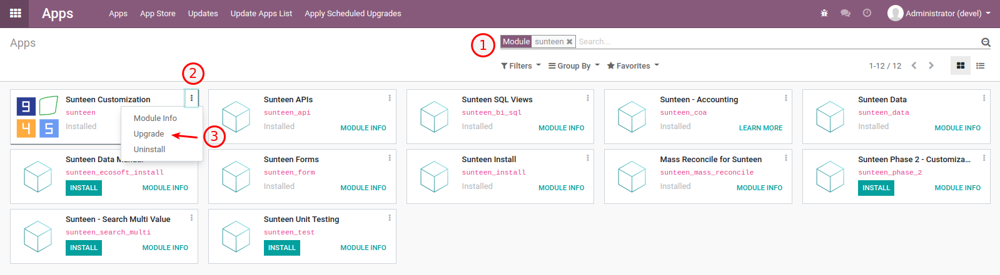
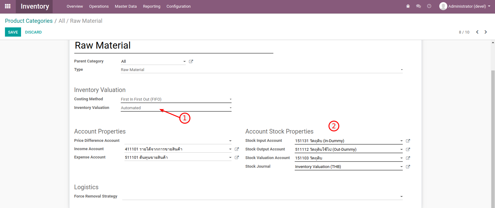
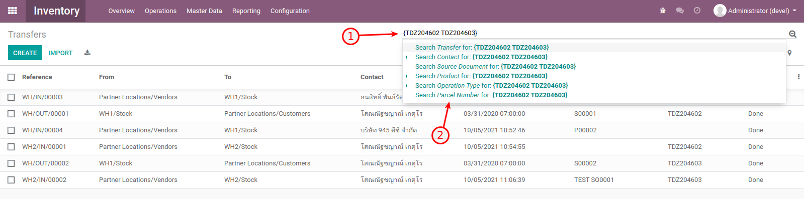

945 Phase 2
945 Phase 2 Development Scope
รองรับการเก็บสินค้าคงคลังมากกว่า 1 (Multi-Warehouse)
รองรับการสร้างและ Validate เอกสารส่งออก (DO) อัตโนมัติ
การบันทึกบัญชีเป็นแบบ Perpetual
ระบบรองรับการผลิต (Manufacturing)
มีการใช้ BoM ในการจัดชุด Kit และผลิตสินค้า
การเชื่อมระหว่างเอกสารต้นทางไปยังเอกสารปลายทาง (SO -> INV และ PO -> INV)
> Install 945 Phase 2
1. อัพเกรด module Sunteen เพื่อเพิ่ม Product Category ใหม่ โดยไปที่เมนู apps > search sunteen > Upgrade
- Import Data ที่ส่งให้ทาง Email เข้าไปในระบบโดยภายในเอกสารจะมีข้อมูลดังนี้
- ไฟล์ csv เรียงตามลำดับการ Import (3 ไฟล์)
1.account.account.csv
2.product.category.csv
3.product.product.csv
ไฟล์ gif เรียงตามลำดับวิธีการ Import
3. ตั้งค่าระบบให้เป็น Multi Warehouses โดยไปที่เมนู Inventory > Configuration > Settings > search คำว่า “multi” > เลือก Multi-Warehouses > Save

Install Module sunteen_phase_2 และ sunteen_data_phase_2 ตามลำดับ

เสร็จสิ้นกระบวนการติดตั้ง Phase 2
> OCA Modules
- account_move_line_<xxx>_info (purchase, sale and stock)
เกี่ยวกับการเชื่อมเอกสารต้นทาง (SO, PO) ไปเอกสารปลายทาง (Invoicing) โดยแสดงที่หน้าต่าง Journal Items
- stock_account_prepare_anglo_saxon_out_lines_hook
เกี่ยวกับการบันทึกเอกสารปลายทาง กรณีที่มีการบันทึกแบบ Perpetual.
- stock_inventory_valuation_unit_cost
แสดง Column ราคาต่อหน่วยที่หน้า Inventory Valuation
- base_search_multi
เพิ่มให้ระบบรองรับการค้นหาแบบหลายค่า (Multi Search) ทุก Module
> 945 Modules
- sunteen_phase_2
โมดูลหลักสำหรับ Business Process ของ 945 ที่เพิ่มเติมใน Phase 2
- sunteen_data_phase_2
ตัวช่วยในการ Import Master Data BoM และ Warehouse ควร Uninstall หลังจาก Install Module นี้เสร็จสิ้น
> การตั้งค่าการบันทึกบัญชีแบบ Perpetual
การบันทึกบัญชีแบบ Perpetual จะต้องมีการตั้งค่า Stock Account ใน Product Category เพื่อการบันทึกบัญชีที่ถูกต้อง โดยมีขั้นตอนดังนี้
ไปที่เมนู Inventory > Configuration > Product Categories > เลือก Product Categories ที่ต้องการ
ที่ Product Categories จะมี 2 ส่วนที่เกี่ยวข้องกับการบันทึกบัญชีดังนี้
การบันทึกบัญชีแบบ Perpetual ให้เลือกเป็น Automated
- การบันทึกบัญชีด้วย Account อะไรบ้าง โดยมีรายละเอียดดังนี้
- Stock Input Account
PO (Cr.)
INV (Dr.)
MO (Cr.) -> สำหรับสินค้าที่ผลิตได้ เช่น WIP หรือ FG
- Stock Out Account
MO (Dr.) -> สำหรับวัตถุดิบ
SP (Dr.) -> สำหรับของเสีย
SO (Dr.)
- Stock Valuation Account
PO (Dr.)
MO (Cr, Dr.) -> สำหรับวัตถุดิบจะเป็น Cr., สินค้าที่ผลิตได้จะเป็น Dr.
SP (Cr.) -> สำหรับของเสีย
SO (Cr.)
Note
สามารถทดสอบ และตรวจสอบการบันทึกบัญชีตามกรณีต่าง ๆ ได้ที่ https://docs.google.com/spreadsheets/d/1Y4uQtS7dgEIGXoM_0lW-UMim-bTZ9TFxJ2wJaxsPms4/edit?usp=sharing
> การค้นหาข้อมูลแบบหลายค่า (Multi Search)
การค้นหาข้อมูลหลายค่าในครั้งเดียว สามารถทำได้โดยการใช้ {} เพื่อกำหนดให้ระบบทราบว่าต้องการใส่ข้อมูลหลายค่า และค่าถัดไปจะดูจากการ เว้นวรรค (Space) เช่น {TDZ204602 TDZ204603 TDZ204604} เหมาะสำหรับการ Copy ข้อมูลจาก Excel มาค้นหาในระบบ
ตัวอย่างการค้นหาข้อมูลหลายค่า (Menu Inventory)
ข้อมูลทั้งหมดก่อนการค้นหา
2. วิธีการค้นหาแบบหลายค่า ให้ใส่ { ตามด้วยข้อมูลที่ต้องการค้นหา และเว้นวรรคสำหรับข้อมูลตัวถัดไป ปิดท้ายด้วยเครื่องหมาย } จากนั้นเลือกค่าที่ต้องการ Filter
ข้อมูลที่ค้นหาทั้งหมด
> การเปลี่ยนแปลงระบบ APIs
การใช้งาน APIs ระบบ 945 มีการเพิ่มเติมให้ส่ง warehouse_id เข้ามาในระบบ หากไม่ใส่ระบบจะมีค่า Default เป็น “WH1”
ตัวอย่างการเพิ่ม warehouse_id
{
"payload": {
"status": "out of delivery", # Status: out of delivery
"partner_id": 1, # Customer (res.partner)
"sunteen_dealer_id": 2, # Dealer (res.partner)
"workflow_process_id": "eCommerce Standard", # Automatic Workflow (sale.workflow.process)
"date_order": "2020-01-31", # Order Date
"transaction_date": "", # Transaction Date
"sunteen_payment_method_id": 3, # Payment Method (sunteen.payment.method)
"sunteen_payment_provider_id": 34, # Payment Provider (res.partner)
"total": 500.0, # Total
"warehouse_id": "WH2", # Warehouse (stock.warehouse)
"order_line": [ # Sale Order Line
{
"sunteen_parcel_number": "TDZ001", # Parcel Number
"sunteen_partner_id": 14, # Transporter (res.partner)
"sunteen_customer": "CUSTOMER1", # Customer
"product_id": 16, # Product (product.product)
"product_uom_qty": 1, # Quantity
"dealer_price_unit": 100.0, # Dealer Unit Price
},
{
"sunteen_parcel_number": "TDZ001",
"sunteen_partner_id": 14,
"sunteen_customer": "CUSTOMER1",
"product_id": 17,
"product_uom_qty": 2,
"dealer_price_unit": 200.0,
},
{
"sunteen_parcel_number": "TDZ001", # Dealer Amount Difference Line
"sunteen_partner_id": 14,
"sunteen_customer": "CUSTOMER1",
"product_id": 18,
"product_uom_qty": 1,
"dealer_price_unit": 20.0, # API sent +, odoo change to -
},
]
},
"auto_create": { # Optional for auto create master data
"partner_id": [
{"name": "Customer 1", "ref": "CUSTOMER1"}
],
"product_id": [
{"name": "Product 1", "default_code": "PRODUCT1"}
]
}
}